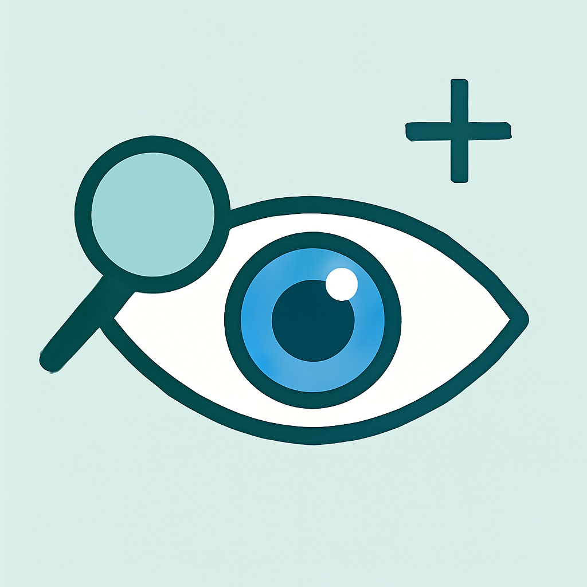

Cuide da sua visão com
Inovação e Simplicidade
Explore uma nova maneira de cuidar dos seus olhos com tecnologia inovadora, testes interativos e conteúdo educativo que se adapta às suas necessidades.

Doutor Queiroz
Respondeu as suas dúvidas!
250k
Assinantes
Parabéns
Você assistiu todas as aulas.